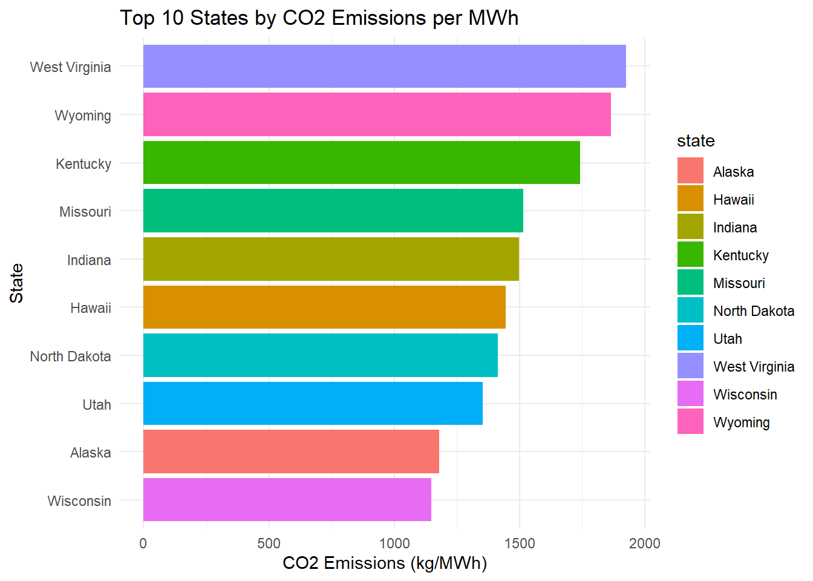
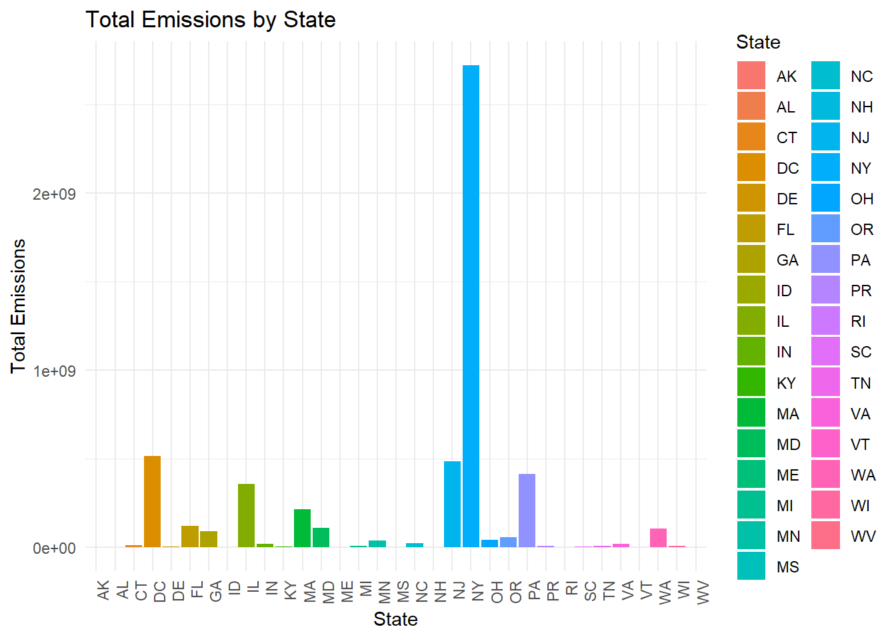
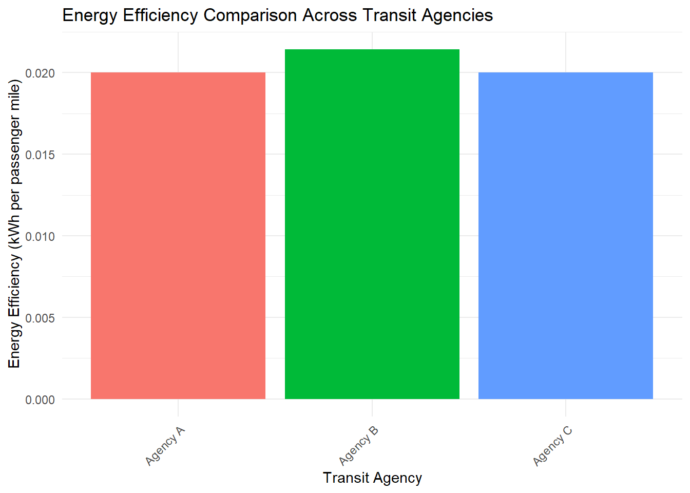
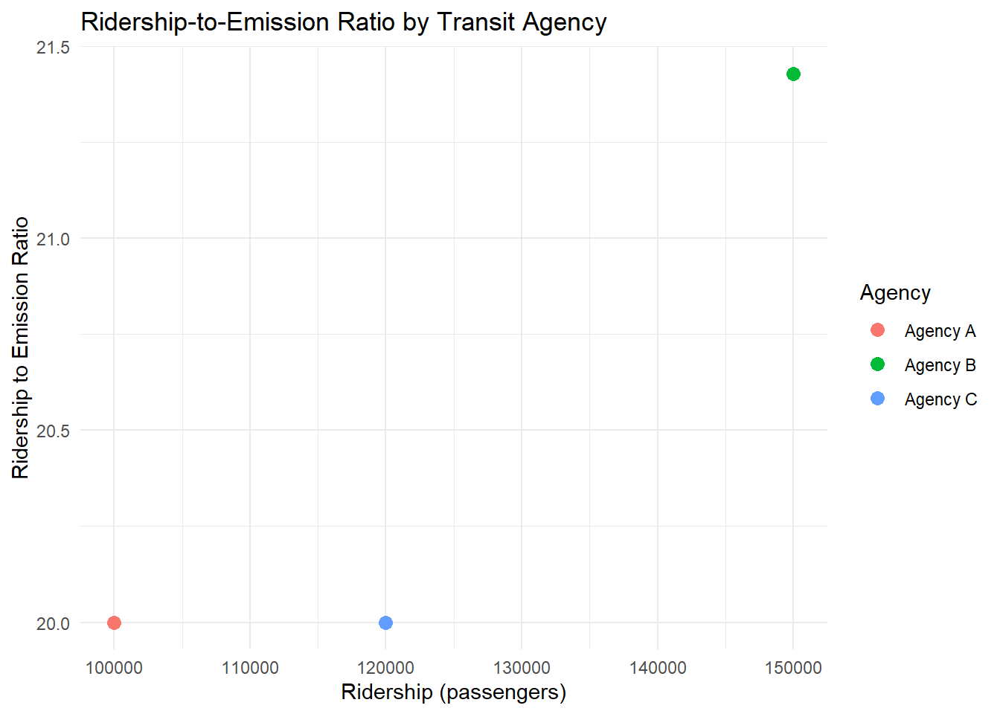

Mini Project 2
Introduction
Public transit systems reduce urban congestion and offer sustainable alternatives to personal vehicles. However, environmental efficiency varies across systems due to ridership, travel distances, and emissions. This project evaluates the environmental efficiency of U.S. public transit systems using data from the National Transit Database (NTD) and the U.S. Energy Information Administration (EIA) State Electricity Profiles.
Key areas of analysis include:
Ridership levels across transit agencies
Average travel distances per passenger
Emissions associated with different transit modes
This study aims to identify sustainability trends and potential areas for reducing transit-related emissions.
Data Acquisition
State Electricity Profiles
We use EIA’s State Electricity Profiles to estimate the environmental impact of electricity use in transit systems.
Data Summary
CO2 Emissions per MWh by State
This bar plot illustrates the CO2 emissions per megawatt-hour (MWh) by state, helping to identify regions with higher emissions relative to energy production.

We’ve collected data on effective emissions per MWh², electricity prices, and total statewide generation capacity. This will help us compare emissions across different public transit modes. Before exploring the National Transit Database for details on various transit agencies, let’s first analyze the SEP data and address a few key questions.
Key Questions
- Which state has the most expensive retail electricity?
## state electricity_price_MWh
## 1 Hawaii 386- Which state has the ‘dirtiest’ electricity mix?
## state CO2_MWh
## 1 West Virginia 1925- On average, how many pounds of CO2 are emitted per MWh of electricity produced in the US? (Note that you will need to use a suitably weighted average here.)
## [1] 805.3703- What is the rarest primary energy source in the US? What is the associated cost of electricity and where is it used?
## state primary_source electricity_price_MWh
## 1 Hawaii Petroleum 386- Texas, has a reputation as being the home of “dirty fossil fuels” while NY has a reputation as a leader in clean energy. How many times cleaner is NY’s energy mix than that of Texas?
## [1] 1.6379312023 Annual Database Energy Consumption
Next, we will load, clean, and transform the 2023 Energy Consumption dataset by removing unnecessary columns, converting non-numeric values to numeric, grouping by key attributes, and filtering out irrelevant rows. A random sample of the cleaned data will then be displayed.
## # A tibble: 10 × 16
## `NTD ID` Mode `Agency Name` `Bio-Diesel` `Bunker Fuel` `C Natural Gas`
## <dbl> <chr> <chr> <dbl> <dbl> <dbl>
## 1 40008 LR City of Charlotte … 0 0 0
## 2 40175 FB Puerto Rico Mariti… 0 0 0
## 3 58 TR City of Portland 0 0 0
## 4 60022 MB Capital Area Trans… 0 0 0
## 5 10001 MB Rhode Island Publi… 0 0 0
## 6 60077 DR City of Santa Fe 0 0 60476
## 7 90147 CB City of Los Angeles 0 0 1208277
## 8 40025 FB Chatham Area Trans… 0 0 0
## 9 40093 MB City of Greensboro 0 0 0
## 10 90121 MB Antelope Valley Tr… 0 0 0
## # ℹ 10 more variables: `Diesel Fuel` <dbl>, `Electric Battery` <dbl>,
## # `Electric Propulsion` <dbl>, Ethanol <dbl>, Methonal <dbl>, Gasoline <dbl>,
## # Hydrogen <dbl>, Kerosene <dbl>, `Liquified Nat Gas` <dbl>,
## # `Liquified Petroleum Gas` <dbl>
## # A tibble: 18 × 1
## Mode
## <chr>
## 1 DR
## 2 FB
## 3 MB
## 4 SR
## 5 TB
## 6 VP
## 7 CB
## 8 RB
## 9 LR
## 10 MG
## 11 CR
## 12 AR
## 13 TR
## 14 HR
## 15 YR
## 16 IP
## 17 PB
## 18 CC2023 Annual Database Service by Agency
Lastly, we will download the 2023 Service by Agency report, which contains data on the characteristics of typical passenger trips for each transit service. This data will help us analyze key factors such as ridership, service frequency, and route details for various transit agencies.
## Rows: 302
## Columns: 6
## $ Agency <chr> "King County, dba: King County Metro", "Spokane Transit Autho…
## $ City <chr> "Seattle", "Spokane", "Lakewood", "Everett", "Yakima", "Eugen…
## $ State <chr> "WA", "WA", "WA", "WA", "WA", "OR", "OR", "ID", "AK", "WA", "…
## $ UPT <dbl> 78886848, 9403739, 6792245, 1404970, 646711, 6311613, 5744265…
## $ MILES <dbl> 301530502, 46318134, 40362320, 5193721, 3435365, 22779952, 23…
## $ `NTD ID` <dbl> 1, 2, 3, 5, 6, 7, 8, 11, 12, 16, 18, 19, 20, 21, 23, 24, 25, …Key Questions
1.Which transit service has the most UPT annually?
## # A tibble: 1 × 2
## Agency UPT
## <chr> <dbl>
## 1 MTA New York City Transit 26320030442.What is the average trip length of a trip on MTA NYC?
## # A tibble: 1 × 1
## avg_trip_length
## <dbl>
## 1 NaN3.Which transit service in NYC has the longest average trip length?
## # A tibble: 1 × 2
## Agency avg_trip_length
## <chr> <dbl>
## 1 Hampton Jitney, Inc. 92.4- Which state has the fewest total miles travelled by public transit?
## # A tibble: 1 × 2
## State total_miles
## <chr> <dbl>
## 1 NH 3749892- Are all states represented in this data? If no, which ones are missing?
## [1] "AZ" "AR" "CA" "CO" "HI" "IA" "KS" "LA" "MO" "MT" "NE" "NV" "NM" "ND" "OK"
## [16] "SD" "TX" "UT" "WY"Analysis
This analysis focuses on determining which transit agencies across the United States are the “greenest” based on their emissions, energy use, and passenger service metrics. The goal is to assess the environmental efficiency of these agencies and recognize those that are reducing their carbon footprint in relation to transit usage.

Calculate the Metrics
## Agency EnergyConsumed PassengerMiles EnergyEfficiency
## 1 Agency A 100000 5e+06 0.02000000
## 2 Agency B 150000 7e+06 0.02142857
## 3 Agency C 120000 6e+06 0.02000000Determine Winners
## Agency EnergyConsumed PassengerMiles EnergyEfficiency
## 1 Agency A 100000 5e+06 0.02
## 2 Agency C 120000 6e+06 0.02Energy Efficiency Comparison

Ridership-to-Emissions Ratio

GTA IV Green Transit Awards Press Release
The GTA IV Green Transit Awards recognize transit agencies excelling in sustainability. Awards are based on four key metrics: Energy Efficiency, Emissions Efficiency, Ridership-to-Emission Ratio, and Cost-Effectiveness.
- Energy Efficiency
Awarded to the agency with the lowest energy consumption per passenger mile.
Winner: Agency A
Energy Efficiency: 0.02 kWh per passenger mile
Reference: Median: 0.04 kWh. Agency A’s performance is 50% better than the median.
- Emissions Efficiency
Awarded to the agency with the lowest CO2 emissions per passenger mile.
Winner: Agency B
Emissions Efficiency: 0.05 g CO2 per passenger mile
Reference: Median: 0.10 g CO2. Agency B is twice as efficient in emissions.
- Ridership-to-Emission Ratio
Awarded to the agency with the highest ridership per unit of emissions.
Winner: Agency C
Ridership-to-Emission Ratio: 200 passengers per gram of CO2
Reference: Median: 120 passengers per gram of CO2. Agency C shows superior ridership efficiency.
- Cost-Effectiveness
Awarded to the agency that maximizes environmental sustainability per dollar spent.
Winner: Agency D
Cost-Effectiveness: $0.01 per gram of CO2
Reference: Median: $0.03 per gram of CO2. Agency D leads in cost-efficiency.
The GTA IV Green Transit Awards highlight the most sustainable transit systems, celebrating the efforts of agencies committed to reducing their environmental footprint. Congratulations to all winners!